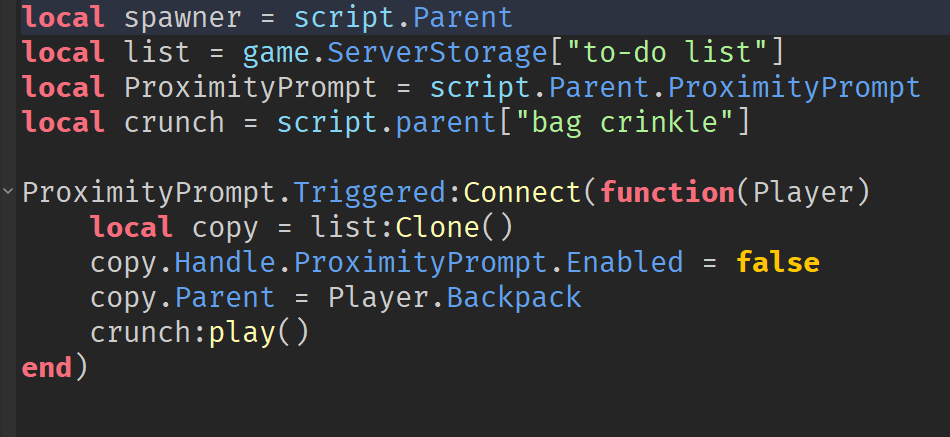
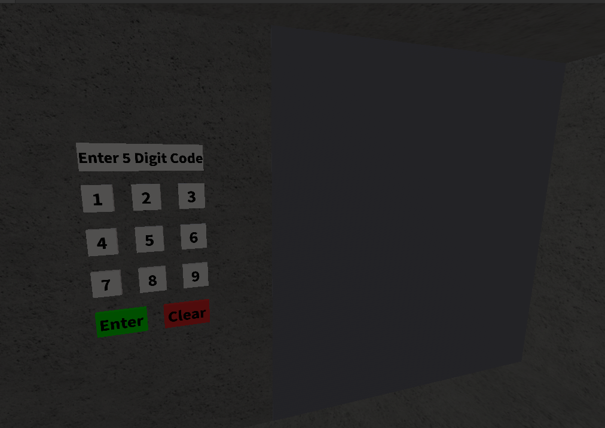
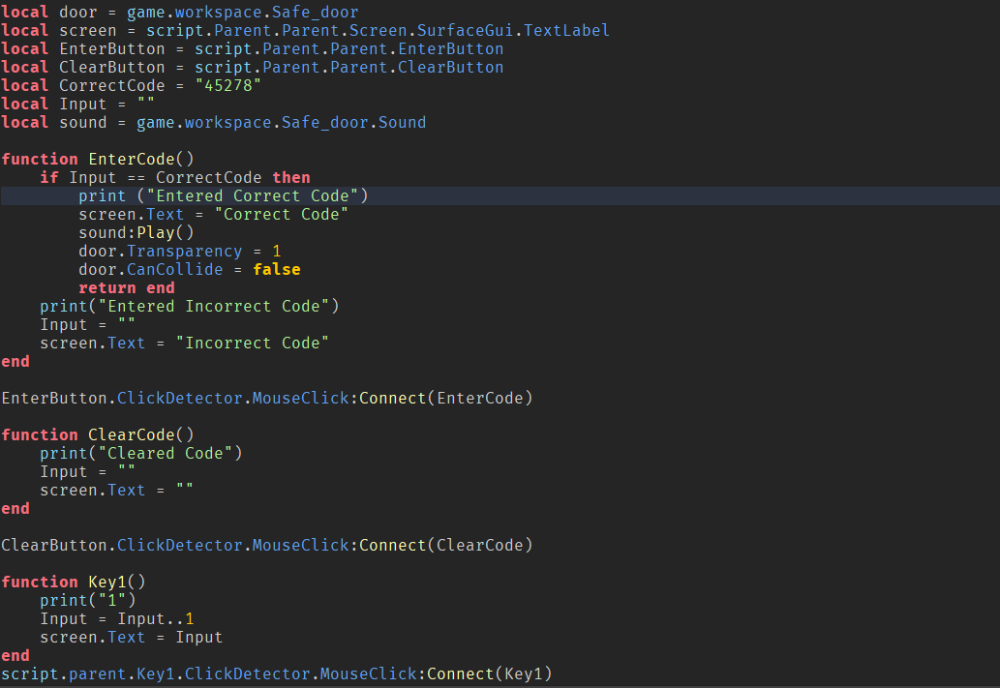
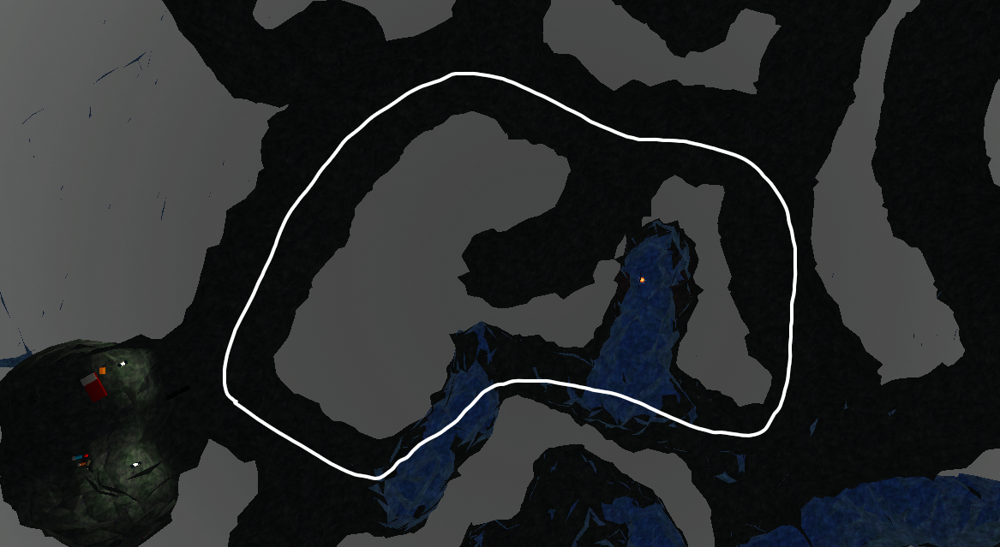
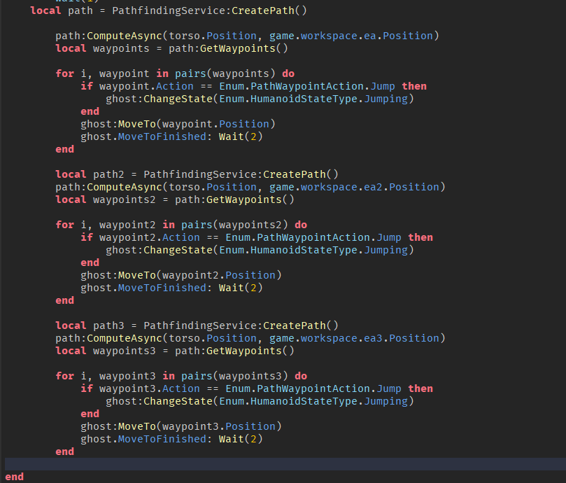
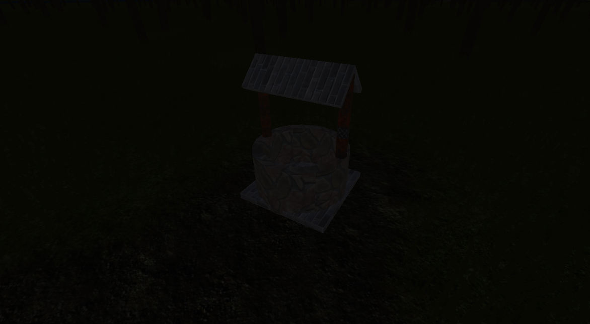
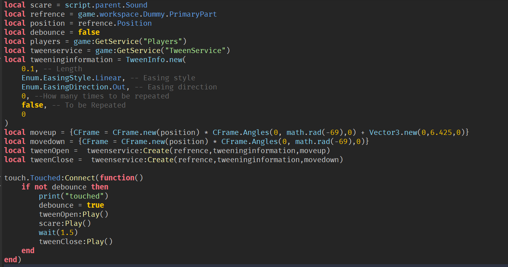
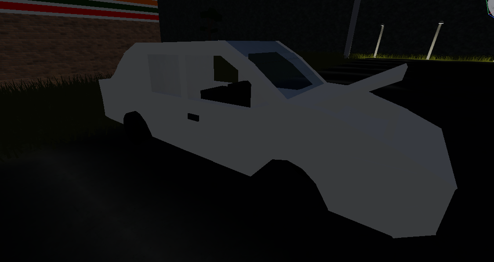
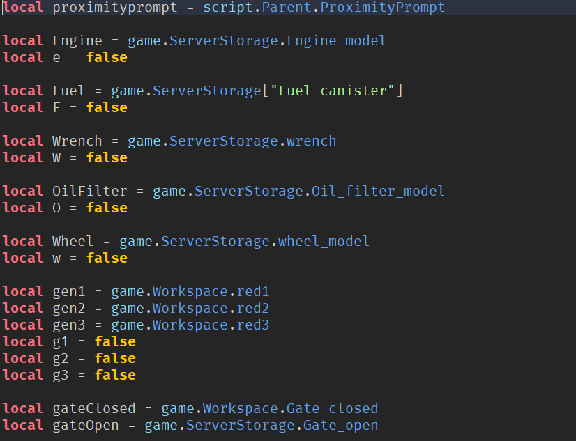
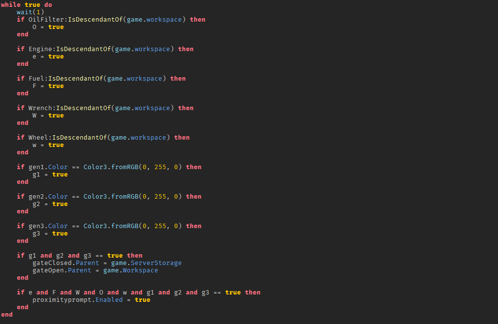

The End is Never Forever
The End is Never Forever is a small game I started working on out of pure curiosty on how games are developed. After starting development on the game it turned out to be a lot of fun and good challenge of my coding skills. This game was made by using lua and the roblox studio program. The End is Never Forever is a horror open world game that is supposed to be completed in one run. It involves exploring a forest that you have mysteriously woken up in without any recollection on how you got there and trying to find a way out.
The End is Never Forever Link

Throughout the game players can find item spawners that can give players multiple items. To do this, a copy of the item is made and then the copy is given to the player.

When adventuring through the game, players will eventually come upon this vault which can only be accessed with a specific code. Players can enter numbers via the number pad and clear and enter their code.

When a number has been inputted the screen for the vault shows that number. If the player chooses to press the clear code button then the previously entered code is wiped. When the enter button has been pressed then the code entered is checked. If the entered code is the same as the correct code then the door is opened. If the code is incorrect then the inputted code is cleared and a message saying incorrect code is displayed.

When adventuring through the game players will find a cave where there is a monster dwelling. The monster follows a set path and if the player gets too near to the monster then they will die.

Two points have been set, the starting point and the half way point through the circuit. Multplie checkpoints have been set between these points to make for a more accurate path. The shortest path to nearest checkpoint or point is calculated and then the monster takes that path. Then the path to the next point is calculated and the monster continues on the path following the circuit.

Early on in the game players might stumble upon a well. Once the player gets near they will be jumpscared by a monster popping out of the well.

Once the player enters a certain region near the well then a CFrame will activate moving the monster into the well and a sound plays with it jumpscaring the player. After this another Cframe is activated and the monster moves back under the map. During this time a debounce is active to stop the player from activating this sequence multiple times.

While exploring through the game the player will find a gas station and next to it a broken down car. Players will soon realise that this car is their key to escaping.

Multiple items need to be used on the car to repair it and allow for the players to escape. There is also a gate that needs to opened to allow the player to escape using the car. To open the gate the player will need to activate a number of generators.

If an item has been used on the car or a generator has been activated then their values turns to true. Once all item and generator values are true then the player is given the option to use the car and escape the forest.